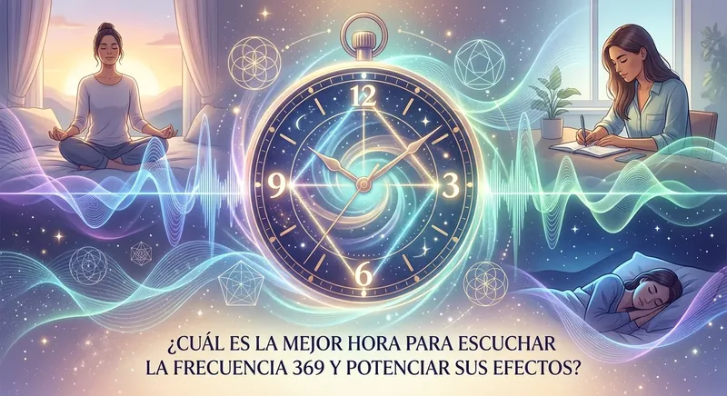

Has estado reproduciendo audios en YouTube durante semanas, repitiendo afirmaciones con la esperanza de desbloquear esa abundancia que parece esquivarte, pero tu cuenta bancaria sigue igual y las oportunidades no se materializan. Te preguntas por qué la ley de atracción parece funcionar para otros y para ti no. La verdad es incómoda: escuchar la frecuencia 369 en el momento equivocado es como intentar sembrar una semilla sobre concreto seco.
Nikola Tesla no solo dejó al descubierto la clave del universo al señalar la majestuosidad de los números 3, 6 y 9; dejó implícita una verdad física sobre la vibración y el ritmo del cosmos. La neurociencia moderna ha logrado validar lo que los místicos sabían hace siglos: existe un reloj biológico y cerebral preciso donde el filtro del consciente se apaga por completo. Si buscas cómo manifestar dinero rápido con frecuencia 369, debes entender que el timing neuro-vibracional lo es absolutamente todo.
El Código 369 de Nikola Tesla y las Ventanas de Plasticidad Subconsciente
Para comprender cuál es la mejor hora para escuchar la frecuencia 369, primero debemos analizar el funcionamiento interno de la mente humana. Tu cerebro opera bajo un guardián invisible llamado el Factor Crítico del Subconsciente. Esta barrera analítica filtra toda la información que recibes durante el día. Cuando escuchas afirmaciones mientras trabajas o cocinas, tu mente consciente rebate cada palabra diciendo: "Eso no es verdad, sigues con deudas" o "Es imposible que eso pase".
El verdadero poder del código 369 manifestación radica en sincronizar la estimulación acústica de alta precisión con los momentos exactos del día en que el Factor Crítico colapsa de forma natural. Durante estas ventanas temporales, las barreras lógicas se disuelven y el cerebro entra en estados de ondas Alfa y Zeta (Alpha/Theta), convirtiendo a tu mente subconsciente en una esponja hiper-receptiva lista para reescribir viejos patrones de escasez.
"Si quieres encontrar los secretos del universo, piensa en términos de energía, frecuencia y vibración."
— Nikola Tesla
Las 3 Ventanas Sagradas: ¿A Qué Hora Escuchar la Frecuencia 369?
Existen tres momentos magistrales al día para activar la estimulación auditiva 369 y reprogramar tu matriz biológica sin esfuerzo. Ignorar estas ventanas equivale a tirar la efectividad del audio a la basura.
- Ventana 1: El Despertar Alfa (Inmediatamente al abrir los ojos)
Durante los primeros 10 a 15 minutos tras salir del sueño, tu cerebro transita entre ondas Theta y Alpha. No has tomado el teléfono, no has leído correos ni te has estresado. En esta fase, tu mente subconsciente está completamente al desnudo. Escuchar la frecuencia 369 aquí imprime la vibración de atracción como el comando primario para todo tu día. - Ventana 2: El Reset del Medio Día (Entre las 12:00 PM y las 3:00 PM)
A mediodía, el cansancio cognitivo genera un pico de saturación cerebral. Es la ventana perfecta para detener la rumiación mental. Aplicar una sesión de reajuste neuroacústico a esta hora destruye los bloqueos energéticos acumulados durante las horas laborales y alinea tu frecuencia con la oportunidad y el flujo monetario. - Ventana 3: El Umbral Somnoliento de Hypnagogia (Justo antes de dormir)
Esta es la ventana más poderosa de todas. El estado hipnagógico previo al sueño profundo es el portal directo al subconsciente. Las microfrecuencias proyectadas en este momento siguen resonando e implantándose durante las 8 horas de ciclo de sueño, eliminando miedos arcaicos y reprogramando tu realidad financiera mientras duermes.
⚠️ ADVERTENCIA CRÍTICA SOBRE LA FRECUENCIA 369
Nunca escuche este tipo de audios estimulantes mientras conduce o realiza operaciones que requieran atención analítica hiperactiva. El arrastre de ondas cerebrales de alta pureza altera los patrones de atención y sumerge al cerebro en estados profundos de trance receptivo.
Por qué los Audios de YouTube para Manifestar Dinero No Funcionan
Quizás llevas meses intentando manifestar y sientes que nada ocurre. Has buscado cualquier cantidad de audio binaural para manifestar en plataformas gratuitas sin ver ningún tipo de salto cuántico en tu realidad. No es tu culpa, pero debes conocer la estafa técnica a la que estás expuesto cotidianamente.
Las plataformas de streaming gratuito como YouTube o Spotify utilizan algoritmos de compresión agresivos (como MP3 a 128kbps u Ogg Vorbis). Estos algoritmos eliminan quirúrgicamente lo que consideran "ruido inaudible" para reducir el tamaño de los archivos. El gran problema es que las microfrecuencias matemáticas y los pulsos binaurales puros residen precisamente en esos espectros eliminados. Lo que escuchas en YouTube es un archivo mutilado, una simple música relajante de fondo desprovista de cualquier capacidad real para alterar tu neuroquímica cerebral.
| Característica Neuroacústica | Audios Gratuitos (YouTube/MP3) | QuantumAudio® (WAV 24-Bit) |
|---|---|---|
| Compresión de Audio | Perdida severa (Algoritmo MP3) | Sin compresión (Master HD Puro) |
| Efectividad en Subconsciente | Nula / Efecto Placebo temporal | Arrastre neuro-vibracional real |
| Microfrecuencias 369 | Recortadas por el algoritmo | 100% Preservadas e intactas |
| Esfuerzo Requerido | Alto (Requiere concentración) | Escucha 100% Pasiva |
¿Listo para experimentar la frecuencia 369 en su estado más puro?
Descubre cómo la estimulación de alta definición sin compresión puede reprogramar tu mente en cuestión de minutos. Conoce cómo la arquitectura sonora de QuantumAudio® elimina los bloqueos subconscientes de raíz sin que tengas que realizar meditaciones complejas.
Conocer más acerca del audio QuantumAudio®El Secreto de la Escucha Pasiva: Reprogramación Sin Esfuerzo
El error más grande al intentar manifestar dinero o abundancia es "forzar" la mente. Intentar visualizar con desesperación lo único que logra es enviar una señal de escasez y ansiedad al universo y a tu propia neuroquímica. La verdadera transformación ocurre cuando la estimulación física actúa sobre el sistema nervioso de manera directa.
Mediante el principio de resonancia armónica y arrastre acústico, una frecuencia pura calibrada a la vibración 369 no requiere que "creas" en ella ni que poseas años de experiencia en meditación. Actúa exactamente igual que un sedante o un estimulante físico: al sonar en el oído interno, el cerebro no tiene más opción que acoplar sus lecturas electroencefalográficas a la frecuencia emisora. Es física cuántica aplicada a la neurobiología.
- Aislante de Ruido Mental: Apaga la rumiación de deudas, problemas y estrés de manera instantánea.
- Alineación de Chakras y Centros Energéticos: Armoniza el flujo vago-simpático, abriendo el campo electrostático del cuerpo hacia la recepción.
- Impronta Subconsciente de Abundancia: Reemplaza las creencias limitantes heredadas sobre la escasez por patrones de certeza matemática.
Pasos para Optimizar tu Sesión Diario con la Frecuencia 369
Para maximizar los resultados y experimentar un salto de realidad en tiempo récord, establece esta rutina sagrada durante los próximos 21 días consecutivos:
- Paso 1: Elección de la Ventana: Selecciona la mañana al despertar o el momento previo a dormir como tu horario inamovible.
- Paso 2: Utiliza Auriculares de Buena Calidad: Para que el desfase de fase y las frecuencias binaurales actúen sobre ambos hemisferios cerebrales, es indispensable utilizar auriculares en lugar de los altavoces del teléfono.
- Paso 3: Fuente de Audio de Alta Fidelidad: Asegúrate de reproducir una fuente Master HD sin compresión. No utilices archivos descargados de convertidores MP3.
- Paso 4: Adopta una Postura Cómoda y Ríndete: No intentes analizar el sonido. Deja que el espectro de onda penetre la barrera auditiva y haga el trabajo de forma 100% pasiva.
La diferencia entre quienes logran resultados astronómicos cambiando su realidad financiera y quienes pasan años atrapados en la rumiación estéril no radica en la suerte. Radica en la precisión con la que entregan la vibración correcta a su mente subconsciente en el momento exacto.
Sincroniza Tu Mente con la Frecuencia del Universo Hoy Mismo
No sigas perdiendo el tiempo con audios comprimidos que filtran las frecuencias verdaderas de Nikola Tesla. Eleva tu vibración al siguiente nivel, penetra las capas profundas de tu subconsciente y descubre el poder transformador de la tecnología neuroacústica pura de QuantumAudio®.
Conocer más acerca del audio QuantumAudio®Tu Subconsciente Espera la Señal Correcta
Cada día que dejas pasar reproduciendo contenido de baja calidad en los horarios equivocados es un día más en el que permites que tus viejos programas automáticos de escasez dicten tu destino. Tu cerebro es una máquina perfecta de manifestación, pero requiere la llave correcta para abrir el cerrojo de la abundancia. Domina tu tiempo, elige la ventana sagrada y permite que la ciencia de la vibración pura transforme tu vida desde la primera escucha.